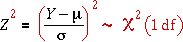

Notation: random variables and their values
We have been fairly loose with notation in earlier chapters of CAST. Our notation has not distinguised between a random variable and the numerical value that is a single a value from the distribution.
More advanced statistics uses capital letters to denote random variables and lower-case letters to denote specific values of these variables.
We will try to observe this convention in the rest of this chapter.
The following are some examples of correct usage of capital and small letters for random variables and their values.
Chi-squared distribution
If a random variable Y has a normal distribution with mean µ and standard deviation σ,
The square of such a standard normal variable has a distribution called a chi-squared (χ2) distribution with 1 degree of freedom,

This chi-squred distribution is extremely skew — negative values are impossible but values can be arbitrarily high.
Shape of the chi-squared distribution (1 d.f.)
The diagram below shows the distribution of the absolute value of a standard normal variable, Z. Since we are ignoring the sign of Z, its probability density function (histogram) is the right half of the standard normal distribution.
The diagram allows you to apply a power transformation to Z. Drag the slider fully to the right to see the distribution of Z2.
The transformation is nonlinear, so the shape of the histogram changes.
Click anywhere on the distribution to highlight some values of Z. Observe that the highlighted area (the probability) remains the same when you transform.
Properties
The chi-squared distribution with 1 d.f. has two properties that are worth noting.